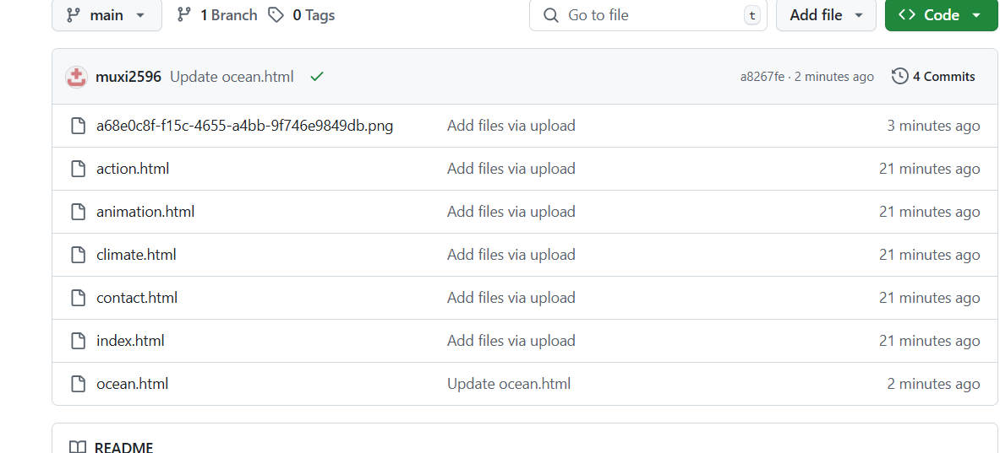
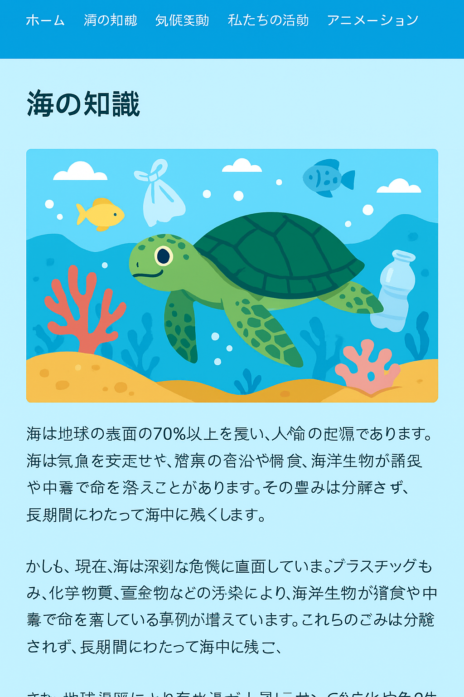
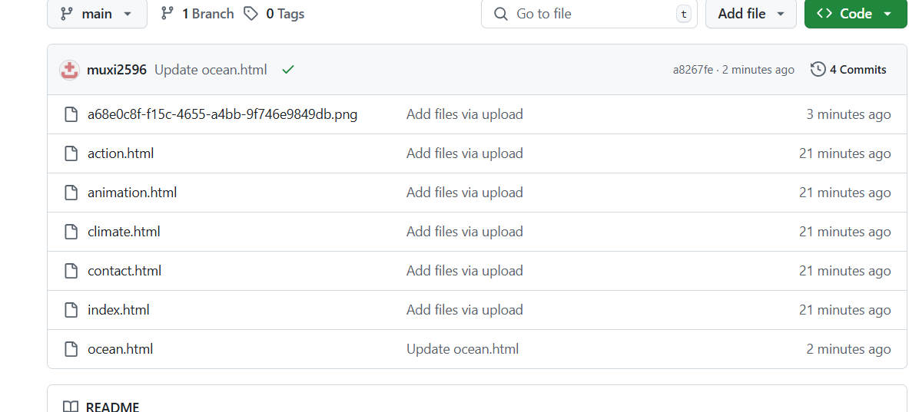
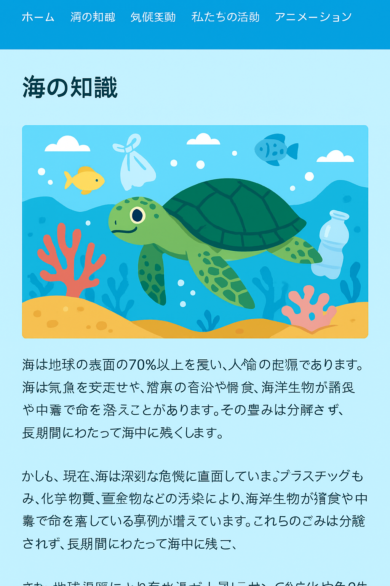

海洋の重要性
海は地球の生命線であり、私たちの気候、食料供給、酸素生産に大きな役割を果たしています。 海洋は二酸化炭素の吸収源でもあり、気候変動の緩和に寄与しています。
海洋汚染の現状
プラスチックごみによる汚染は海洋生態系に甚大な影響を及ぼしています。 魚や海鳥が誤ってプラスチックを摂取し、健康被害を受ける例が増えています。
海洋保全の取り組み
国際的な協定や地域の清掃活動など、海を守るための取り組みが進められています。 教育や意識啓発も重要な役割を果たしています。
海は地球の生命線であり、私たちの気候、食料供給、酸素生産に大きな役割を果たしています。 海洋は二酸化炭素の吸収源でもあり、気候変動の緩和に寄与しています。
プラスチックごみによる汚染は海洋生態系に甚大な影響を及ぼしています。 魚や海鳥が誤ってプラスチックを摂取し、健康被害を受ける例が増えています。
国際的な協定や地域の清掃活動など、海を守るための取り組みが進められています。 教育や意識啓発も重要な役割を果たしています。
